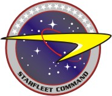
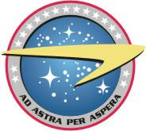
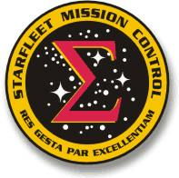
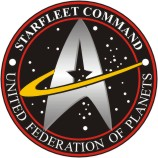
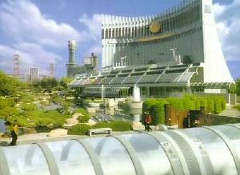

|
Origini e scopi della Flotta Stellare
|
|
|
|
 |
|
 |
|
 |
|
|
 |
|  |
|  |
Prima del
2161
Nella prima metà del XXII secolo sulla
Terra viene creata un'organizzazione chiamata Flotta Stellare con lo
scopo di promuovere il viaggio interstellare. Malgrado i ritardi imposti
dall'Alto Comando Vulcaniano, nel
2151 viene varata l'Enterprise, il primo vascello esplorativo a lungo raggio
di classe NX.
Origini
La Flotta Stellare è stata fondata nel
2161 assieme alla
Federazione dei Pianeti Uniti. L'esigenza di coordinare le
risorse tecnologiche e fisiche di vari mondi,
Terra, Vulcano,
Alfa Centauri,
Andoria e
Tellar (i membri fondatori), ha fatto sì che quest'istituzione fosse creata
su principi di uguaglianza, democrazia e parità. La
Terra usciva dalle Guerre
Romulane, esperienza
che è servita come esempio in modo da strutturare la Flotta come organismo di
ricerca e difesa, dando un'organizzazione manageriale alla nuova istituzione di
tipo gerarchico militare con basi marinare.
Scopi
Lo scopo primario è l'esplorazione e conoscenza dell'universo, altro scopo non
meno importante è la difesa della Federazione. La Flotta Stellare funge da forza
paramilitare della Federazione ed è impegnata a difenderne i confini da
qualsiasi intrusione ostile. La Flotta, pur avendo un arsenale bellico molto
evoluto, non ha mai avuto funzione di mezzo coercitivo nei confronti di altre
razze, né è stata usata come mezzo offensivo. Il Quartier Generale della
Flotta si trova sulla Terra, nei pressi di San
Francisco. Vi sono innumerevoli comandi di Settore sparsi nello spazio federale,
ognuno con proprie basi stellari, che fungono da porti per le squadre di navi
assegnate al settore stesso. In base all'ampiezza della Federazione, la Flotta
Stellare è l'organismo più importante e meglio equipaggiato come numero di navi
e tecnologie dell'intero quadrante Alfa. Il punto debole della Flotta è la sua
diluizione nello spazio Federale, che, vista l'ampiezza, necessita di tempi
piuttosto lunghi per il suo attraversamento.
- In Enterprise si parla
di Flotta Stellare, ma non è quella della Federazione, per il solo semplice
fatto che la Federazione non esiste ancora. È probabile che il nome della
flotta federale derivi da quella terrestre che si vede in
Enterprise, ma lo scopriremo
con l'evolversi dei fatti narrati nella serie.